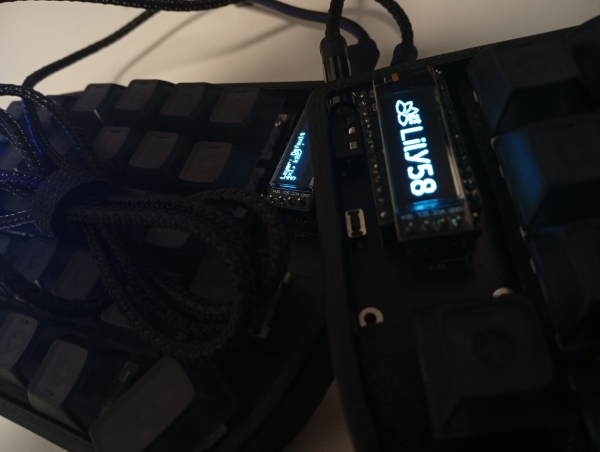

I stumbled upon custom-built keyboards on YouTube, and it caught my attention, as I'd seen the likes of ThePrimeagen and Lex Fridman who hold their split Kinesis dear to their hearts, and many reviews saying how much an ergonomic keyboard could prevent wrist pain, improve posture, and typing overall. So after learning a bit of soldering and getting more comfortable with electronics, I've purchased a Lily58 clone build kit and built my first custom keyboard.
It was not all sunshine and rainbows, of course, as I had to resolder some key sockets and tiny diodes afterwards, and my WPM dropped to around 7 in the first week using it. But it all paid off, as now I've practically ditched my mouse in my workflow in favor of QMK mouse movements and shortcuts, am faster and more comfortable writing code with the layers I customized using Vial, and keep improving my typing faster than before.